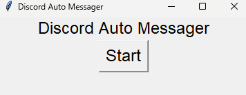
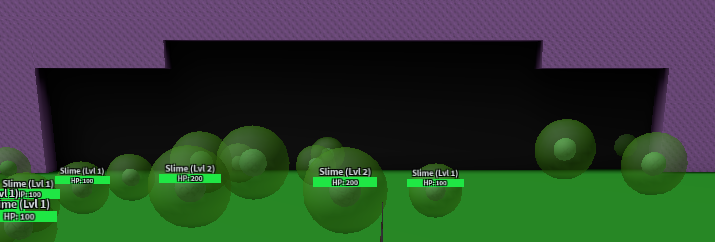
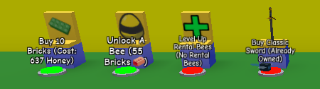

packages = ["numpy", "pandas"]
# This prints 'hello world' in the webpage and not the terminal
print("I use python to make my scripts, they use libarys such as pyautogui, pydirectinput and more")
print("this means that my macros and scripts can be run across many OS, such as mac and linuix as well and windows")
What macros do we have?
print("Currently i have made 2 macros, disocrd auto messager (bypasses bot detection) and a retro swarm challenge macro")
print("These macros get updated every so often for bugfixes and improvments, so please report and bugs to me")
Auto discord messager
print("This sends messagers at a set random times, so dyno bot and others cannot detect it")
print("You can set which times you want it it will select one at random before typing again")
print("This macro uses Ctrl + V so it is easy to send any message and can also send images")
print("This macro Currently only works on 1080p, but i can help with using it with 4k")

Auto retro swarm challenge macro
print("This macro can join the retro swarm challenge and get the sword, attack mobs then loop")
print("it uses image detection to see if it joins the lobby and when to exit, it can reopen roblox")
print("if it does not detect the image after 10 tries, to make the program more stable")


from js import document
def handle_click(event):
link_text = event.target.innerText
document.getElementById("homeLink").addEventListener("click", handle_click)
document.getElementById("servicesLink").addEventListener("click", handle_click)
document.getElementById("aboutLink").addEventListener("click", handle_click)
document.getElementById("contactLink").addEventListener("click", handle_click)